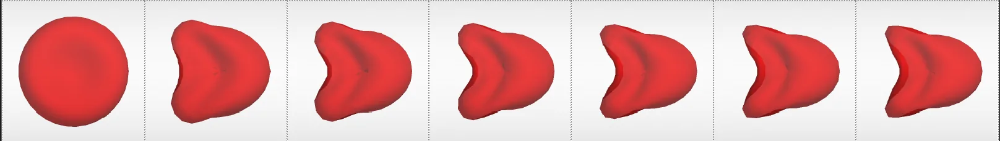
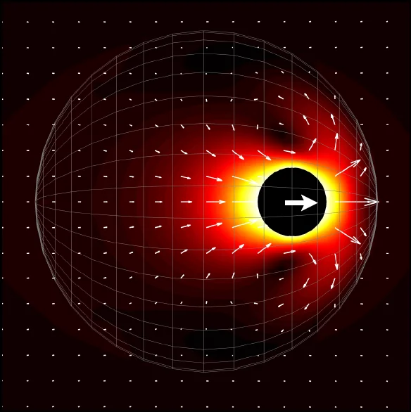

01Thrust one
Cells and soft interfaces
Red blood cells squeeze through capillaries that are as narrow as, or narrower than, the cells themselves. How their thin, viscoelastic membrane deforms, and the tension it carries, matters for mechanosensitive ion channels such as PIEZO1, whose dysfunction is linked to hereditary anemia. For my dissertation, I built a spectral boundary integral solver coupled with thin-shell mechanics that simulates red blood cells in unbounded flow and in microcapillaries.
- A fully implicit, multistep time integrator for spectral boundary integral simulations of red blood cell flow takes substantially larger time steps while needing about as many matrix–vector products as explicit methods. Phys. Fluids 2021 · Featured
- Accounting for membrane viscoelasticity is essential to capture the transient shapes observed when a red blood cell starts flowing in a microcapillary. Biophys. J. 2023
- Extending the framework to droplets whose interfaces carry their own shear and dilatational viscosity reveals how interfacial rheology governs a viscous drop that encloses a translating particle. arXiv 2026 · under review, JFM

